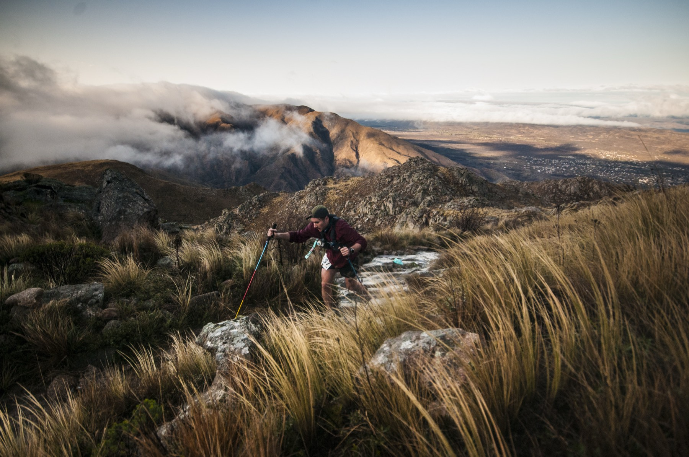
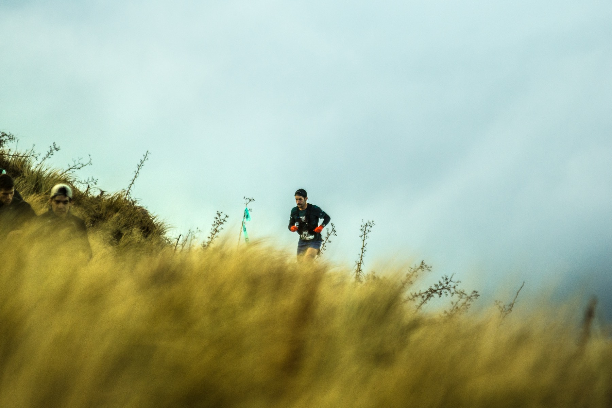
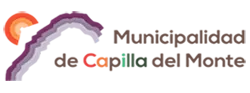
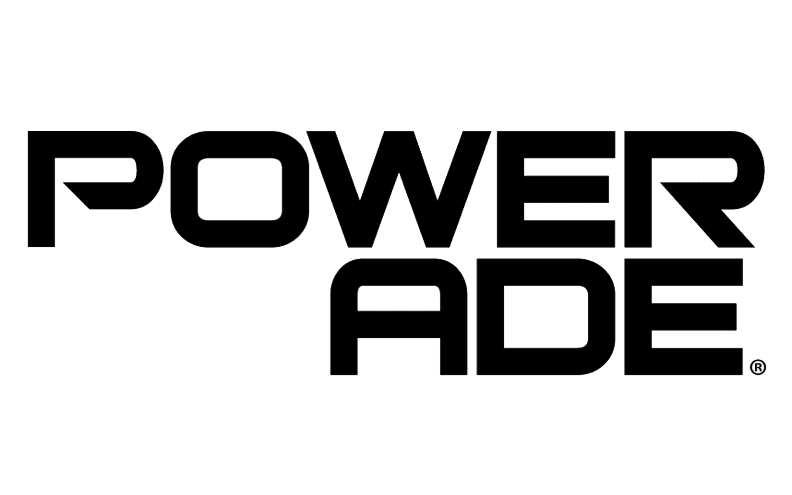

- Dorsal al frente, visible, sin doblar
- Chip de cronometraje
- Remera oficial de la carrera
- Hidratación propia: vaso o flask reutilizable
- Celular cargado, con el número de emergencia agendado
- Documento

Cumbre del Uritorco1.940 m — el techo de las Sierras Chicas
Una montaña. Siete maneras de subirla.
El cerro no cambia de forma según quién lo suba. Lo único que elegís es cuánto querés que te cueste: trece kilómetros de sierra, o setenta que arrancan de madrugada y terminan al sol. La cumbre es la misma para todos.
27—29 de agosto Capilla del Monte, Córdoba
Próxima edición
27—2908
Capilla del Monte
- Largada
- Eco Camping Calabalumba
- Pruebas
- 7, de 5 a 70 km
- Duración
- Viernes a domingo
Distancias
Todas se corren sobre terreno natural de montaña — como mucho un quinto de asfalto, según el estándar ITRA. Cruzan el Uritorco, el Cerro Overo y Las Gemelas.
-
10K
Tu primera vez en la sierra- Distancia real
- 13,3 km
- Desnivel
- 400 m
- Techo
- 1.253 m
-
20K
Ya sabés lo que es subir- Distancia real
- 20,3 km
- Desnivel
- 800 m
- Techo
- 1.644 m
-
28K
La primera que pisa la cumbre- Distancia real
- 26,8 km
- Desnivel
- 1.420 m
- Techo
- 1.940 m
-
35K
Donde empieza el ultra- Distancia real
- 36 km
- Desnivel
- 1.980 m
- Techo
- 1.940 m
-
55K
Todo el día en la montaña- Distancia real
- 54 km
- Desnivel
- 2.440 m
- Techo
- 1.940 m
-
70K
Largás de noche. Terminás al sol.- Distancia real
- 70,2 km
- Desnivel
- 3.300 m
- Techo
- 1.940 m
-
KV
Sólo para arriba. Sábado aparte.- Distancia real
- 5 km
- Desnivel
- 1.000 m
- Techo
- 1.940 m
Los chicos también corren: UTU Kids y UTU Junior, el sábado a la tarde, en circuitos cortos dentro del predio.
Por qué se corre
La sierra no sabe quién sos. No le importa tu marca, tu edad ni cuántas carreras llevás encima. Hace una sola pregunta, y la hace arriba, cuando ya no queda nadie mirando: ¿seguís subiendo?
Desafío UTU®
Lo que
llevás
Arriba no hay kiosco. El material obligatorio se controla en la largada y puede volver a controlarse en el sendero: no es trámite, es lo que te sostiene si el clima gira.
- Mochila
- Frontal
- Abrigo
- Comida
- Linterna frontal y baterías de repuesto
- Manta térmica
- Botiquín personal
- Campera cortaviento
- Comida sólida de reserva
- Silbato
Lo que entra, sale
Cada envoltorio que llevás al circuito vuelve con vos o queda en un puesto. Hay estaciones de reciclado en el predio. Tirar basura en la sierra es descalificación, sin discusión.
El sendero es la carrera
Cortar camino por fuera de la marcación es peligroso para vos y destruye el suelo serrano, que tarda años en volver. Se corre por donde está marcado.
El listado definitivo y los tiempos de corte salen con el reglamento oficial. Dudas, a desafio.utu@gmail.com.

Abrir en YouTubeTres días
La carrera es el domingo, pero el fin de semana arranca el viernes con la acreditación y la feria del corredor.
- 14:00 — 20:00Acreditación del KV
- 14:00 — 20:00Abre la feria del corredor
- 19:00Charla técnica
- 05:30Concentración en la base del Uritorco
- 06:00Largada del KV
- 10:30Premiación del KV
- 12:00 — 20:00Acreditación general
- 16:00UTU Kids y UTU Junior
- 02:30Largan las 70K
- 04:30Largan las 55K
- 06:00Largan las 35K
- 07:00Largan las 28K
- 08:00Largan las 20K
- 08:30Largan las 10K
- 13:00 — 17:00Premiaciones
Horarios de referencia según la edición anterior. Los definitivos se publican con el reglamento.
Llegar
Capilla del Monte está en el norte del valle de Punilla, a unos 110 km de la ciudad de Córdoba. La sede es el Eco Camping Calabalumba, sobre el río.
RN 38 hacia el norte desde Córdoba, pasando Carlos Paz, Cosquín y La Falda. Poco menos de dos horas. Hay estacionamiento cerca del predio, pero el fin de semana de la carrera se llena temprano.
Servicios diarios desde la terminal de Córdoba hasta la de Capilla del Monte. De ahí al predio son pocas cuadras, y en la terminal hay remises.
Aeropuerto Taravella (COR) y después auto o micro. Si venís de otra provincia, llegá el jueves o el viernes temprano: acreditarse con tiempo te ahorra la peor parte.
Dudas
Lo que más nos preguntan. Si la tuya no está, escribinos.
Nunca corrí trail. ¿Puedo largar?
Sí, y la 10K está hecha para eso: trece kilómetros con cuatrocientos metros de subida, sin pasos técnicos. Si venís corriendo en calle y hacés un par de salidas al cerro antes, la terminás. Las distancias largas son otra cosa y sí piden experiencia en montaña.
¿Por qué la 10K mide 13,3 km?
Porque en trail el nombre de la prueba es una referencia y el terreno manda. Los circuitos siguen senderos, filos y quebradas que ya existen, y la distancia sale de ahí. Por eso cada prueba publica su distancia real.
¿Qué es el KV?
Subida pura: mil metros de desnivel en cinco kilómetros, desde la base del Uritorco hasta la cumbre. Se corre el sábado, en día aparte, y la bajada es de vuelta a pie, sin cronómetro.
¿Puedo hacer el KV y además correr el domingo?
Sí, es una combinación habitual y por eso el KV va en otro día. Ahora, subir mil metros el sábado te deja las piernas cargadas: elegí la distancia del domingo con eso en la cabeza.
¿Hay puestos de hidratación?
Sí, repartidos en cada circuito. Igual la hidratación propia es obligatoria: los puestos reponen, no reemplazan tu mochila. No se entregan vasos descartables, así que el vaso o flask reutilizable va sí o sí.
¿Y si el clima se pone feo?
Arriba el tiempo cambia rápido: puede haber viento, niebla o frío en altura con el pueblo al sol. Por eso la campera y la manta térmica son obligatorias en las distancias largas. Si las condiciones son de riesgo, la organización puede acortar o modificar recorridos.
¿Da puntos ITRA y UTMB?
Sí. La carrera está reconocida por ITRA y forma parte del UTMB Index. Los puntos dependen de la distancia y el desnivel de cada prueba, y se acreditan cuando se homologan los resultados.
¿Cuánto sale y cuándo abren las inscripciones?
Los valores salen al abrir la inscripción, escalonados: cuanto antes te anotás, menos pagás. Dejanos tu mail acá abajo y te avisamos apenas abre — los cupos de las distancias largas se agotan primero.
Organiza
Warriors Runners

Avalan
Acompañan

¿Listo?
Nos vemos
arriba.
Dejanos tu mail y te escribimos cuando abran las inscripciones, con el reglamento y el listado de material. Antes de que se llenen los cupos.
Las inscripciones ya están abiertas →